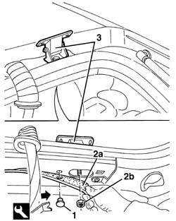

7015A24 tailgate hinges - repair or replace with tailgate removed
- Path
- Procedures > 70 FITTINGS > 7015 TAILGATE/ > 7015A tailgate assembly > 7015A24 tailgate hinges - repair or replace with tailgate removed
- Kind
- repair procedure (removal / refitting; the operation number is the code)
- Applies to
- all engines; all production periods
- Interactive page
- https://sloeber94.github.io/elrnDB-a156/en/#/3238707
Applies to: all engines; all production periods; only with equipment: Station Wagon
 Removing
Removing
 Refitting
Refitting7040H12 Roof panel REAR TRIM - R.R.
1. Working on both sides of the car, undo the retaining studs using the special tool.
 | Name | Country |
|---|---|---|
1 | Scraper blade | 1.823.015.000 |
2. Slightly lower the ceiling trim (2a) and undo the moulding retaining nuts (2b).
3. Remove the hinges.

Applies to: all engines; all production periods; only with equipment: Station Wagon
Refitting
RemovingCheck that the hinges are undamaged.
Position the hinges.
Screw on the fixing nuts, without tightening them.